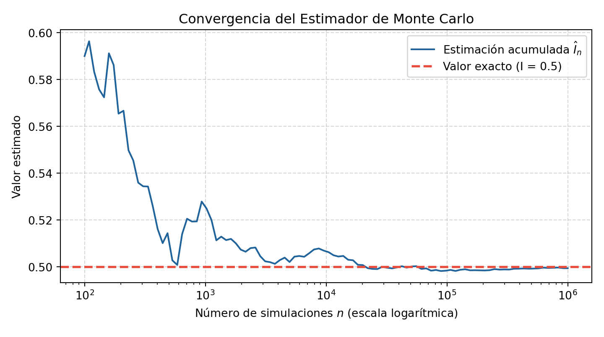

2 Problema 2
- Use simulaciones para aproximar el valor de la integral \(I := \int_{0}^{\infty}\int_{0}^{x}e^{-(x+y)}\,dy\,dx\), y compare su estimación con el valor exacto de dicha integral.
2.1 Cálculo del valor exacto.
Calculando analíticamente el valor de \(I\):
\[I = \int_{0}^{\infty}\left(\int_{0}^{x}e^{-y}\,dy\right)e^{-x}\,dx = \int_{0}^{\infty}(1 - e^{-x})e^{-x}\,dx\] \[= \int_{0}^{\infty}(e^{-x} - e^{-2x})\,dx = \left.\left(-e^{-x} + \frac{1}{2}e^{-2x}\right)\right|_{0}^{\infty} = 0 - \left(-\frac{1}{2}\right) = \frac{1}{2}\]
En conclusión el valor exacto de \(I = 0.5\).
2.2 Interpretación probabilística.
Observemos que el integrando es \(e^{-(x+y)}\) que es la densidad conjunta de dos variables aleatorias independientes exponenciales de tasa 1, \(X \sim \text{Exp}(1)\) e \(Y \sim \text{Exp}(1)\). Entonces:
\[I = \int_{0}^{\infty}\int_{0}^{\infty}e^{-(x+y)}\mathbf{1}_{\{y < x\}}\,dy\,dx = \mathbb{E}[\mathbf{1}_{\{Y < X\}}] = P(Y < X)\]
2.3 Simulación de Monte Carlo.
- Algoritmo para generar \(\mathbf{1}_{\{Y < X\}}\):
- Generar \(U_{1}, U_{2} \sim \text{Unif}(0,1)\).
- Aplicar transformación inversa: \(X \leftarrow -\ln(U_{1})\) y \(Y \leftarrow -\ln(U_{2})\).
- Devolver la variable indicadora \(\mathbf{1}_{\{Y < X\}}\).
- Generar \(U_{1}, U_{2} \sim \text{Unif}(0,1)\).
- Estimador:
\[\hat{I}_{N} = \frac{1}{N}\sum_{i=1}^{N}\mathbf{1}_{\{Y_{i} \le X_{i}\}}, \qquad \text{Error estándar} = \sqrt{\frac{\hat{I}_{N}(1 - \hat{I}_{N})}{N}}\]
2.4 Código de simulación y convergencia en Python.
import numpy as np
import matplotlib.pyplot as plt
np.random.seed(42)
N = 1000000
# Variables exponenciales estándar mediante transformada inversa
X = -np.log(np.random.rand(N))
Y = -np.log(np.random.rand(N))
indicadoras = (Y <= X).astype(int)
estimacion = np.mean(indicadoras)
error_est = np.sqrt(estimacion * (1 - estimacion) / N)
print(f"Valor exacto: 0.500000")## Valor exacto: 0.500000## Estimación Monte Carlo: 0.499448## Error estándar: 0.000500## Error absoluto: 0.000552# Gráfico de trayectoria de convergencia
pasos = np.logspace(2, 6, num=100, dtype=int)
medias_acumuladas = [np.mean(indicadoras[:p]) for p in pasos]
plt.figure(figsize=(7.5, 4.2))## <Figure size 750x420 with 0 Axes>plt.plot(pasos, medias_acumuladas, color="#20639b", linewidth=1.5, label="Estimación acumulada $\hat{I}_n$")## [<matplotlib.lines.Line2D object at 0x72d853cef220>]## <matplotlib.lines.Line2D object at 0x72d853cef640>## Text(0.5, 1.0, 'Convergencia del Estimador de Monte Carlo')## Text(0.5, 0, 'Número de simulaciones $n$ (escala logarítmica)')## Text(0, 0.5, 'Valor estimado')## <matplotlib.legend.Legend object at 0x72d853cefc40>